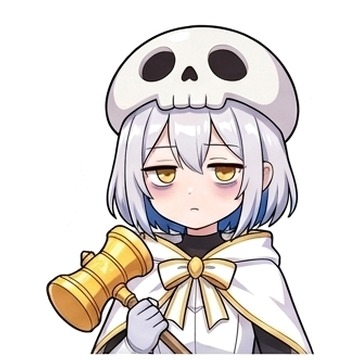
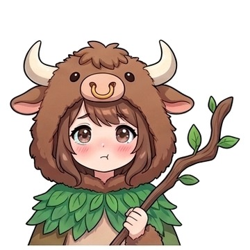

01
01
오크 전사
포갤 억까 근딜러
열혈 호탕 근딜러. 던전 억까나 미터기 논쟁이 터지면 도끼부터 들고 웃으며 돌진하는 포에버갤 대표 전사.
#오크 전사#오크전사#전사#오전#무전
오크·언데드·노움·드워프·트롤·타우렌·나이트엘프·인간·스카이본 — 포에버갤 상황극을 책임지는 9종족×9직업 고정 멤버를 소개합니다.
 01
01
포갤 억까 근딜러
열혈 호탕 근딜러. 던전 억까나 미터기 논쟁이 터지면 도끼부터 들고 웃으며 돌진하는 포에버갤 대표 전사.

023시간 묵언수행 보기
3시간 던전에서도 말없이 탱킹하다가 마지막에 무심한 팩트 한 줄 명언을 남기고 사라지는 묵언수행 성기사.
칼소멸 · 근딜 훈수꾼
위험하면 빛의 속도로 칼소멸 쓰고 혼자 살아남아 파티창에 깐족 훈수와 드립을 던지는 장난꾸러기 도적.
 04
04
팝콘 · 해탈 결론러
아수라장 던전에서도 한 발 물러서 팝콘을 씹으며 한 마디로 해탈 결론을 내리는 마이웨이 사냥꾼.
 05
05
토템 중계 · 팩폭러
토템을 깔고 번개를 튕기며 던전 막장극을 신나게 중계하고 뼈 때리는 팩폭을 날리는 하이텐션 주술사.

06마나 오링 · 54렙 캐삭 회드
힐하다 마나가 바닥나면 눈물 글썽이며 54렙 캐삭을 고민하는 순둥이 회드. 억울할 때 볼을 빵빵하게 부풀린다.
 07
07
다크서클 힐러 공감러
밤샘 인던·레이드 힐링에 찌들어 다크서클이 짙게 내려온 힐러들의 영원한 대변인. 항상 마나와 물빵이 고프다.
 08
08
지인팟 추리 명탐정
빨간 임프 인형을 품에 안고 지인팟·분배 사건을 예리하게 파헤치는 흑마법사. 가끔 뉴비 티가 나 멜론 주스를 건네기도 한다.
 09
09
물빵 보급 · 20:06 폭로러
호빵과 파란 물병을 들고 다니는 물빵 보급 담당. 어이없는 순간엔 말 한마디 없이 동공지진 정지 화면으로 응수하는 시그니처 리액션 요원.